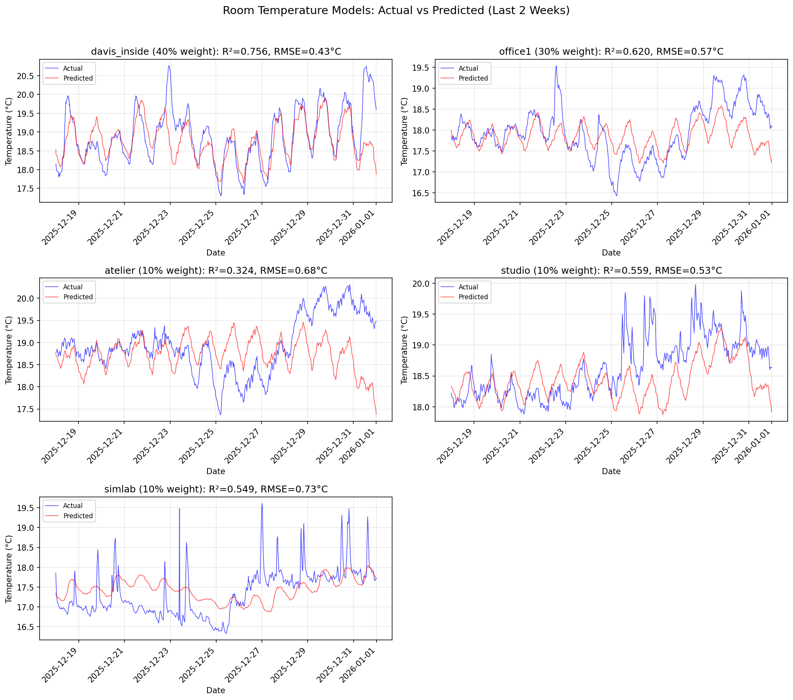

τ_effort: 4-48h - rooms respond faster to heating changes
τ_pv: ~24h for all rooms - consistent solar response time
Weighted Average Model Performance
Overall weighted R² = 0.632
Implications for Optimization
Pre-heating timing: With τ_effort of 4-48h, rooms need advance notice
to reach target temperature
Solar preheating: All rooms (except atelier) benefit from solar gain.
Schedule comfort periods during/after sunny periods.
Room variation: Different rooms respond differently to heating.
simlab and studio respond strongly; atelier responds weakly.
Figure 17: Thermal model: heating curve (top-left),
actual vs predicted for each room (top-middle, top-right, bottom-left, bottom-middle),
time series validation (bottom-right).

Figure 17b: Actual vs predicted temperature for all rooms
in the weighted temperature objective (last 2 weeks). Rooms ordered by weight:
davis_inside (40%), office1 (30%), atelier (10%), studio (10%), simlab (10%).